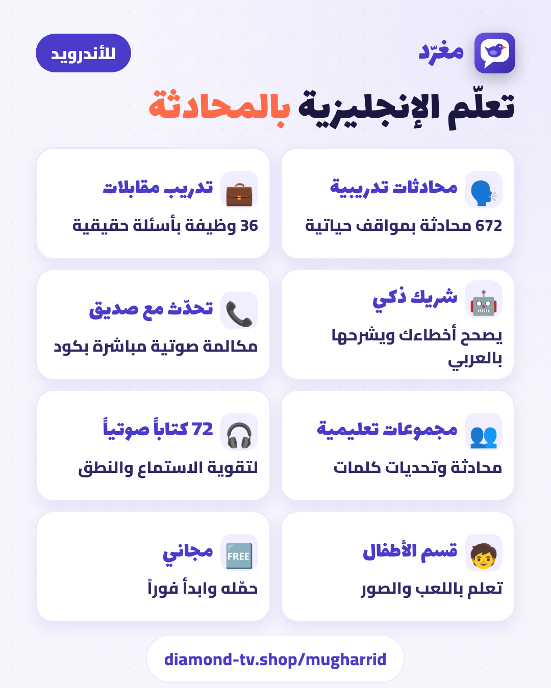

تطبيق مغرّد: تعلّم الإنجليزية بالمحادثة والتدرّب مع صديق مجاناً
كثيرون يعرفون قواعد الإنجليزية لكنهم يتوقفون عند أول جملة يريدون قولها. مغرّد تطبيق أندرويد مجاني يبدأ من الكلام: تتحدث، فيصحح لك، وتتدرب مع صديق.

ما هو مغرّد؟
مغرّد تطبيق لتعلم الإنجليزية بواجهة عربية، يركز على التحدث قبل الحفظ. تختار قسمك (كبار أو أطفال)، وتجري اختباراً قصيراً يحدد مستواك من A1 إلى C1، ثم تبني عليه الدروس والمحادثات والنصوص المقترحة. والتطبيق مجاني بالكامل ولا يطلب اشتراكاً.
مميزات مغرّد
- مقابلة عمل حقيقية: تجيب بصوتك عن أسئلة عامة وأسئلة خاصة بوظيفتك (36 وظيفة)، ثم تحصل على تقييم وتصحيح لجملك وإجابات مقترحة أقوى.
- 672 محادثة تدريبية: في السفر والمطاعم والتسوق والعمل والصحة والخدمات والمكالمات الهاتفية والبيت، مع اقتراحات للردود.
- تصحيح مع شرح بالعربية: يظهر الخطأ والصواب وسببه، ويجمع التطبيق أخطاءك المتكررة في دفتر لتراجعها.
- 72 كتاباً صوتياً وبودكاست: حوارات وحلقات لتقوية الاستماع والنطق في أي وقت.
- مفردات تُراجَع في موعدها: كلماتك المحفوظة تعود إليك قبل أن تنساها.
- قسم للأطفال: كلمات مصورة ونطق واضح وخطوات قصيرة. وللأهل أفكار أخرى في تعليم الإنجليزية للأطفال باللعب.
تدرّب مع صديق
الإنجليزية أسهل مع شريك. تضيف صديقك بكود خاص من 6 خانات، وتتحدثان بالإنجليزية كتابةً، أو عبر مكالمة صوتية بين شخصين. ويظهر لك وحدك تصحيح أخطائك مع الشرح، فلا إحراج أمام صديقك. وللمجموعات الدراسية رمز دعوة (حتى 20 عضواً) للمحادثة الكتابية وتحديات الكلمات، حيث يرسل أحدكم جملة بالعربية ويحاول الآخرون قولها بالإنجليزية.
كيف تبدأ في دقيقتين؟
- حمّل التطبيق من الزر أدناه ثم ثبّته على هاتف أندرويد.
- سجّل ببريدك واختر قسمك، ثم أجرِ اختبار المستوى.
- ابدأ بتمرين اليوم، وفعّل التذكير اليومي لتستمر.
⬇ تحميل تطبيق مغرّد (APK) لأندرويد
صفحة التطبيق وشرح التثبيت ←
التطبيق يُثبَّت من ملف APK خارج المتجر. إن ظهر تنبيه من هاتفك فهو تنبيه عام لأي تطبيق من خارج المتجر، وخطوات التثبيت مشروحة في صفحة التحميل. ويُنتظر أن يتوفر لاحقاً على متجر Google Play.
لمن يناسب مغرّد؟
يناسب من يريد التحدث بدل الاكتفاء بالقراءة: موظف يستعد لمقابلة، أو مسافر، أو طالب، أو أب وأم يريدان بداية مرحة لأطفالهما. وهو مدرّب تعليمي مساعد، ولا يغني عن معلم متخصص إذا احتجت منهجاً أكاديمياً أو شهادة معتمدة.
أسئلة شائعة
هل مغرّد مجاني؟
نعم، بالكامل بلا اشتراك. تحتاج حساباً لحفظ تقدمك وميزات الأصدقاء.
هل يعمل على الآيفون؟
حالياً على أندرويد فقط، ونسخة آيفون غير متاحة.
هل أحتاج إنترنت؟
نعم، لتسجيل الدخول وميزات الأصدقاء والمحتوى الجديد.
كيف أتواصل مع فريق التطبيق؟
عبر واتساب من صفحة التطبيق أو البريد sales@diamond-tv.shop.
صفحة مغرّد ← · تصفح مقالات التربية والتعليم ← · العودة إلى المكتبة ←